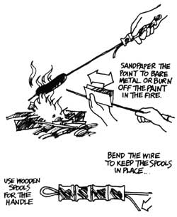

The Mother Earth News? ..
By the Mother Earth News editors
May/June 1978
Here are a few more of THE Mother Earth News (restricted) syndicated features which have appeared in 100+ newspapers over the past five years.
It's wiener roast time . . . time, to put it another way, to recycle some of those coat hangers that are cluttering up the closet. One heavy hanger, you know, plus a few old spools-and five minutes' work with a pair of wire-cutting pliers-equals a rather superior roasting "stick".
In her book, Living On The Earth, Alicia Bay Laurel suggests that making a wind chime or two is a particularly nice way to recycle odds and ends. Any old hoop from a worn-out basket or lamp shade makes the frame, and discarded monofilament fishing line is ideal for tying the whole thing together.
The actual chimes can be cutoff lengths of pipe, seashells, bones . . . even rusty nails. Use what you have at hand.
For the star on the bottom, work your way around the top of a tin can with a punch-type opener. Next, remove the top with a regular can opener . . . and fold out the points. Either file the edges smooth . . . or make sure the wind chime is hung out of reach so that no one will cut his fingers on the edges of the decoration.
Thanks to spiraling food costs and the uncertainties of the times, more people than ever will be planting a garden this year. Perhaps you'd like to try your hand at raising a vegetable patch in 1978 too . . . but you have no place to give the idea a whirl. No back yard. No vacant lot. No plot of land to call your own.
"There's no reason to consider yourself licked before you begin," says Jack Roland Coggins. "Here in Lincoln, Nebraska I just 'borrow' the use of a chunk-or chunks-of soil big enough to feed my family."
Jack is an "organic" gardener and he finds that the free use of land for his natural form of mini-farming is readily available in and around almost every village, town, and city in the U.S. and Canada. "All you have to do is ask," he says. "Property owners are usually pleased to find someone willing to relieve them of the costly burden of controlling weeds on their vacant lots. Many also appreciate the contribution that organic culture can make to the soil. Once you point out that your activities will be building-not depleting or polluting-the land and actually Increasing the lot's value, you're usually home free."
Coggins never "sharecrops" the lots he gardens because he doesn't find it necessary and he feels that trying to divide a summer and fall harvest in the spring only sets the stage for later squabbles. He does, however, take small presents of fresh vegetables to a landowner as his crops ripen. "This is only sensible public relations," he says, "and it gives me the chance to promote my more natural form of gardening."
So. If you're a would-be organic gardener with no place to raise vegetables, take a tip from Jack Roland Coggins and borrow some land. You can improve your neighborhood, promote the natural way of life, and put a big dent in your food bill . . . all for the price of a few seeds and some honest effort. But without actually owning a single square Inch of land!
|
 |
 |
|